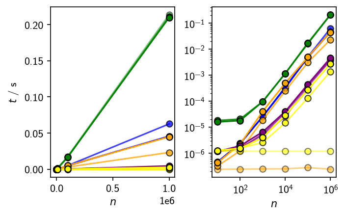
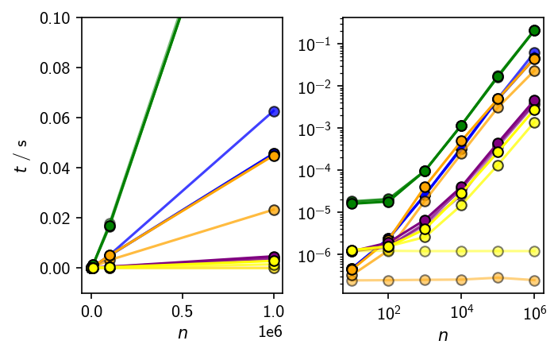

Benchmarking¶
Notebook to organise benchmarks of different implementations of the density-criterion (similarity) check. In general, two neighbourhood containers are tested to have at least a certain number of common elements. For an even base line, only cythonised versions are tested. The possible variants use:
Python set intersection
Python set controlled queries
libcpp.set controlled queries
NumPy array intersection
NumPy array controlled queries
Table of Contents
1 Pre-requirements
2 Version info
3 Helper function definitions
4 Python set
5 NumPy Array
Pre-requirements¶
[2]:
from collections import defaultdict
import sys
import time
import numpy as np
# %matplotlib widget
import matplotlib as mpl
import matplotlib.pyplot as plt
# Jupyter extensions
%load_ext Cython
%load_ext line_profiler
%load_ext memory_profiler
[3]:
# Matplotlib configuration
mpl.rcParams.update(mpl.rcParamsDefault)
mpl.rc_file("../matplotlibrc", use_default_template=False)
[4]:
%%HTML
<style>
.container { width:85% !important; }
</style>
Version info¶
[59]:
print(f"{'Python':>20} : ", *sys.version.splitlines())
modules = [
]
for alias, m in modules:
try:
print(f"{alias:>20} : ", m.__version__)
except AttributeError:
print(f"{alias:>20} : ", "no version info")
Python : 3.8.5 | packaged by conda-forge | (default, Aug 21 2020, 18:21:27) [GCC 7.5.0]
Helper function definitions¶
[6]:
CASES_HIGH_SIM = [ # a, b, c
(range(10), range(10), "10"),
(range(100), range(100), "100"),
(range(1000), range(1000), "1000"),
(range(10000), range(10000), "10000"),
(range(100000), range(100000), "100000"),
(range(1000000), range(1000000), "1000000"),
]
CASES_LOW_SIM = [ # a, b, c
(range(10), range(10, 20), "10"),
(range(100), range(100, 200), "100"),
(range(1000), range(1000, 2000), "1000"),
(range(10000), range(10000, 20000), "10000"),
(range(100000), range(100000, 200000), "100000"),
(range(1000000), range(1000000, 2000000), "1000000"),
]
[7]:
def format_case(case, form="set"):
if form == "set":
return tuple(set(x) for x in case[:2]) + (case[2], )
elif form == "array":
return tuple(np.asarray(x, dtype=np.intp) for x in case[:2]) + (case[2], )
else:
raise ValueError("Unknown format")
Python set¶
[8]:
%%cython
cpdef bint check_similarity_set(set a, set b, Py_ssize_t c):
"""Check if similarity criterion is fulfilled.
Args:
a: Set of point indices
b: Set (collection) of point indices
c: Similarity cut-off
Returns:
True if set `a` and set `b` have at least `c` common
elements
"""
if c == 0:
return 1
cdef Py_ssize_t len_intersec = len(a.intersection(b))
if len_intersec >= c:
return 1
return 0
[9]:
%%cython
cpdef bint check_similarity_set_min(set a, set b, Py_ssize_t c):
"""Check if similarity criterion is fulfilled.
Args:
a: Set of point indices
b: Set (collection) of point indices
c: Similarity cut-off
Returns:
True if set `a` and set `b` have at least `c` common
elements
"""
if c == 0:
return 1
if len(a) > len(b):
a, b = b, a
cdef Py_ssize_t ai
cdef Py_ssize_t common = 0
for ai in a:
if ai in b:
common += 1
if common == c:
return 1
return 0
NumPy Array¶
[10]:
%%cython -a
import numpy as np
cimport numpy as np
ctypedef np.intp_t ARRAYINDEX_DTYPE_t
cpdef bint check_similarity_array_min(
ARRAYINDEX_DTYPE_t[::1] a,
ARRAYINDEX_DTYPE_t[::1] b,
ARRAYINDEX_DTYPE_t c):
"""Check if the CNN criterion is fullfilled
Check if `a` and `b` have at least `c` common elements. Faster than
computing the intersection (say with `numpy.intersect1d`) and
comparing its length to `c`.
Args:
a, b: 1D Array of integers (neighbour point indices) that
supports the buffer protocol.
c: Check if `a` and `b` share this many elements.
Returns:
1 if set `a` and set `b` have at least `c` common
elements, 0 otherwise
"""
cdef ARRAYINDEX_DTYPE_t i, j # Control variables
cdef ARRAYINDEX_DTYPE_t sa = a.shape[0] # Array lengths
cdef ARRAYINDEX_DTYPE_t sb = b.shape[0]
cdef ARRAYINDEX_DTYPE_t ai, bj # Checked elements
cdef ARRAYINDEX_DTYPE_t common = 0 # Common neighbours count
if c == 0:
return 1
if sa > sb:
a, b = b, a
for i in range(sa):
ai = a[i]
for j in range(sb):
bj = b[j]
if ai == bj:
# Check similarity and return/move on early
common += 1
if common == c:
return 1
break
return 0
[10]:
Generated by Cython 0.29.21
Yellow lines hint at Python interaction.
Click on a line that starts with a "+" to see the C code that Cython generated for it.
01:
+02: import numpy as np
__pyx_t_1 = __Pyx_Import(__pyx_n_s_numpy, 0, 0); if (unlikely(!__pyx_t_1)) __PYX_ERR(0, 2, __pyx_L1_error) __Pyx_GOTREF(__pyx_t_1); if (PyDict_SetItem(__pyx_d, __pyx_n_s_np, __pyx_t_1) < 0) __PYX_ERR(0, 2, __pyx_L1_error) __Pyx_DECREF(__pyx_t_1); __pyx_t_1 = 0; /* … */ __pyx_t_1 = __Pyx_PyDict_NewPresized(0); if (unlikely(!__pyx_t_1)) __PYX_ERR(0, 2, __pyx_L1_error) __Pyx_GOTREF(__pyx_t_1); if (PyDict_SetItem(__pyx_d, __pyx_n_s_test, __pyx_t_1) < 0) __PYX_ERR(0, 2, __pyx_L1_error) __Pyx_DECREF(__pyx_t_1); __pyx_t_1 = 0;
03: cimport numpy as np
04:
05: ctypedef np.intp_t ARRAYINDEX_DTYPE_t
06:
+07: cpdef bint check_similarity_array_min(
static PyObject *__pyx_pw_46_cython_magic_f7d61c5f9fe712799446c56e264d9857_1check_similarity_array_min(PyObject *__pyx_self, PyObject *__pyx_args, PyObject *__pyx_kwds); /*proto*/
static int __pyx_f_46_cython_magic_f7d61c5f9fe712799446c56e264d9857_check_similarity_array_min(__Pyx_memviewslice __pyx_v_a, __Pyx_memviewslice __pyx_v_b, __pyx_t_46_cython_magic_f7d61c5f9fe712799446c56e264d9857_ARRAYINDEX_DTYPE_t __pyx_v_c, CYTHON_UNUSED int __pyx_skip_dispatch) {
__pyx_t_46_cython_magic_f7d61c5f9fe712799446c56e264d9857_ARRAYINDEX_DTYPE_t __pyx_v_i;
__pyx_t_46_cython_magic_f7d61c5f9fe712799446c56e264d9857_ARRAYINDEX_DTYPE_t __pyx_v_j;
__pyx_t_46_cython_magic_f7d61c5f9fe712799446c56e264d9857_ARRAYINDEX_DTYPE_t __pyx_v_sa;
__pyx_t_46_cython_magic_f7d61c5f9fe712799446c56e264d9857_ARRAYINDEX_DTYPE_t __pyx_v_sb;
__pyx_t_46_cython_magic_f7d61c5f9fe712799446c56e264d9857_ARRAYINDEX_DTYPE_t __pyx_v_ai;
__pyx_t_46_cython_magic_f7d61c5f9fe712799446c56e264d9857_ARRAYINDEX_DTYPE_t __pyx_v_bj;
__pyx_t_46_cython_magic_f7d61c5f9fe712799446c56e264d9857_ARRAYINDEX_DTYPE_t __pyx_v_common;
int __pyx_r;
__Pyx_RefNannyDeclarations
__Pyx_RefNannySetupContext("check_similarity_array_min", 0);
__PYX_INC_MEMVIEW(&__pyx_v_a, 1);
__PYX_INC_MEMVIEW(&__pyx_v_b, 1);
/* … */
/* function exit code */
__pyx_L1_error:;
__PYX_XDEC_MEMVIEW(&__pyx_t_2, 1);
__PYX_XDEC_MEMVIEW(&__pyx_t_3, 1);
__Pyx_WriteUnraisable("_cython_magic_f7d61c5f9fe712799446c56e264d9857.check_similarity_array_min", __pyx_clineno, __pyx_lineno, __pyx_filename, 1, 0);
__pyx_r = 0;
__pyx_L0:;
__PYX_XDEC_MEMVIEW(&__pyx_v_a, 1);
__PYX_XDEC_MEMVIEW(&__pyx_v_b, 1);
__Pyx_RefNannyFinishContext();
return __pyx_r;
}
/* Python wrapper */
static PyObject *__pyx_pw_46_cython_magic_f7d61c5f9fe712799446c56e264d9857_1check_similarity_array_min(PyObject *__pyx_self, PyObject *__pyx_args, PyObject *__pyx_kwds); /*proto*/
static char __pyx_doc_46_cython_magic_f7d61c5f9fe712799446c56e264d9857_check_similarity_array_min[] = "Check if the CNN criterion is fullfilled\n\n Check if `a` and `b` have at least `c` common elements. Faster than\n computing the intersection (say with `numpy.intersect1d`) and\n comparing its length to `c`.\n\n Args:\n a, b: 1D Array of integers (neighbour point indices) that\n supports the buffer protocol.\n c: Check if `a` and `b` share this many elements.\n Returns:\n 1 if set `a` and set `b` have at least `c` common\n elements, 0 otherwise\n ";
static PyObject *__pyx_pw_46_cython_magic_f7d61c5f9fe712799446c56e264d9857_1check_similarity_array_min(PyObject *__pyx_self, PyObject *__pyx_args, PyObject *__pyx_kwds) {
__Pyx_memviewslice __pyx_v_a = { 0, 0, { 0 }, { 0 }, { 0 } };
__Pyx_memviewslice __pyx_v_b = { 0, 0, { 0 }, { 0 }, { 0 } };
__pyx_t_46_cython_magic_f7d61c5f9fe712799446c56e264d9857_ARRAYINDEX_DTYPE_t __pyx_v_c;
PyObject *__pyx_r = 0;
__Pyx_RefNannyDeclarations
__Pyx_RefNannySetupContext("check_similarity_array_min (wrapper)", 0);
{
static PyObject **__pyx_pyargnames[] = {&__pyx_n_s_a,&__pyx_n_s_b,&__pyx_n_s_c,0};
PyObject* values[3] = {0,0,0};
if (unlikely(__pyx_kwds)) {
Py_ssize_t kw_args;
const Py_ssize_t pos_args = PyTuple_GET_SIZE(__pyx_args);
switch (pos_args) {
case 3: values[2] = PyTuple_GET_ITEM(__pyx_args, 2);
CYTHON_FALLTHROUGH;
case 2: values[1] = PyTuple_GET_ITEM(__pyx_args, 1);
CYTHON_FALLTHROUGH;
case 1: values[0] = PyTuple_GET_ITEM(__pyx_args, 0);
CYTHON_FALLTHROUGH;
case 0: break;
default: goto __pyx_L5_argtuple_error;
}
kw_args = PyDict_Size(__pyx_kwds);
switch (pos_args) {
case 0:
if (likely((values[0] = __Pyx_PyDict_GetItemStr(__pyx_kwds, __pyx_n_s_a)) != 0)) kw_args--;
else goto __pyx_L5_argtuple_error;
CYTHON_FALLTHROUGH;
case 1:
if (likely((values[1] = __Pyx_PyDict_GetItemStr(__pyx_kwds, __pyx_n_s_b)) != 0)) kw_args--;
else {
__Pyx_RaiseArgtupleInvalid("check_similarity_array_min", 1, 3, 3, 1); __PYX_ERR(0, 7, __pyx_L3_error)
}
CYTHON_FALLTHROUGH;
case 2:
if (likely((values[2] = __Pyx_PyDict_GetItemStr(__pyx_kwds, __pyx_n_s_c)) != 0)) kw_args--;
else {
__Pyx_RaiseArgtupleInvalid("check_similarity_array_min", 1, 3, 3, 2); __PYX_ERR(0, 7, __pyx_L3_error)
}
}
if (unlikely(kw_args > 0)) {
if (unlikely(__Pyx_ParseOptionalKeywords(__pyx_kwds, __pyx_pyargnames, 0, values, pos_args, "check_similarity_array_min") < 0)) __PYX_ERR(0, 7, __pyx_L3_error)
}
} else if (PyTuple_GET_SIZE(__pyx_args) != 3) {
goto __pyx_L5_argtuple_error;
} else {
values[0] = PyTuple_GET_ITEM(__pyx_args, 0);
values[1] = PyTuple_GET_ITEM(__pyx_args, 1);
values[2] = PyTuple_GET_ITEM(__pyx_args, 2);
}
__pyx_v_a = __Pyx_PyObject_to_MemoryviewSlice_dc_nn___pyx_t_46_cython_magic_f7d61c5f9fe712799446c56e264d9857_ARRAYINDEX_DTYPE_t(values[0], PyBUF_WRITABLE); if (unlikely(!__pyx_v_a.memview)) __PYX_ERR(0, 8, __pyx_L3_error)
__pyx_v_b = __Pyx_PyObject_to_MemoryviewSlice_dc_nn___pyx_t_46_cython_magic_f7d61c5f9fe712799446c56e264d9857_ARRAYINDEX_DTYPE_t(values[1], PyBUF_WRITABLE); if (unlikely(!__pyx_v_b.memview)) __PYX_ERR(0, 9, __pyx_L3_error)
__pyx_v_c = __Pyx_PyInt_As_Py_intptr_t(values[2]); if (unlikely((__pyx_v_c == ((npy_intp)-1)) && PyErr_Occurred())) __PYX_ERR(0, 10, __pyx_L3_error)
}
goto __pyx_L4_argument_unpacking_done;
__pyx_L5_argtuple_error:;
__Pyx_RaiseArgtupleInvalid("check_similarity_array_min", 1, 3, 3, PyTuple_GET_SIZE(__pyx_args)); __PYX_ERR(0, 7, __pyx_L3_error)
__pyx_L3_error:;
__Pyx_AddTraceback("_cython_magic_f7d61c5f9fe712799446c56e264d9857.check_similarity_array_min", __pyx_clineno, __pyx_lineno, __pyx_filename);
__Pyx_RefNannyFinishContext();
return NULL;
__pyx_L4_argument_unpacking_done:;
__pyx_r = __pyx_pf_46_cython_magic_f7d61c5f9fe712799446c56e264d9857_check_similarity_array_min(__pyx_self, __pyx_v_a, __pyx_v_b, __pyx_v_c);
int __pyx_lineno = 0;
const char *__pyx_filename = NULL;
int __pyx_clineno = 0;
/* function exit code */
__Pyx_RefNannyFinishContext();
return __pyx_r;
}
static PyObject *__pyx_pf_46_cython_magic_f7d61c5f9fe712799446c56e264d9857_check_similarity_array_min(CYTHON_UNUSED PyObject *__pyx_self, __Pyx_memviewslice __pyx_v_a, __Pyx_memviewslice __pyx_v_b, __pyx_t_46_cython_magic_f7d61c5f9fe712799446c56e264d9857_ARRAYINDEX_DTYPE_t __pyx_v_c) {
PyObject *__pyx_r = NULL;
__Pyx_RefNannyDeclarations
__Pyx_RefNannySetupContext("check_similarity_array_min", 0);
__Pyx_XDECREF(__pyx_r);
if (unlikely(!__pyx_v_a.memview)) { __Pyx_RaiseUnboundLocalError("a"); __PYX_ERR(0, 7, __pyx_L1_error) }
if (unlikely(!__pyx_v_b.memview)) { __Pyx_RaiseUnboundLocalError("b"); __PYX_ERR(0, 7, __pyx_L1_error) }
__pyx_t_1 = __Pyx_PyBool_FromLong(__pyx_f_46_cython_magic_f7d61c5f9fe712799446c56e264d9857_check_similarity_array_min(__pyx_v_a, __pyx_v_b, __pyx_v_c, 0)); if (unlikely(!__pyx_t_1)) __PYX_ERR(0, 7, __pyx_L1_error)
__Pyx_GOTREF(__pyx_t_1);
__pyx_r = __pyx_t_1;
__pyx_t_1 = 0;
goto __pyx_L0;
/* function exit code */
__pyx_L1_error:;
__Pyx_XDECREF(__pyx_t_1);
__Pyx_AddTraceback("_cython_magic_f7d61c5f9fe712799446c56e264d9857.check_similarity_array_min", __pyx_clineno, __pyx_lineno, __pyx_filename);
__pyx_r = NULL;
__pyx_L0:;
__PYX_XDEC_MEMVIEW(&__pyx_v_a, 1);
__PYX_XDEC_MEMVIEW(&__pyx_v_b, 1);
__Pyx_XGIVEREF(__pyx_r);
__Pyx_RefNannyFinishContext();
return __pyx_r;
}
08: ARRAYINDEX_DTYPE_t[::1] a,
09: ARRAYINDEX_DTYPE_t[::1] b,
10: ARRAYINDEX_DTYPE_t c):
11: """Check if the CNN criterion is fullfilled
12:
13: Check if `a` and `b` have at least `c` common elements. Faster than
14: computing the intersection (say with `numpy.intersect1d`) and
15: comparing its length to `c`.
16:
17: Args:
18: a, b: 1D Array of integers (neighbour point indices) that
19: supports the buffer protocol.
20: c: Check if `a` and `b` share this many elements.
21: Returns:
22: 1 if set `a` and set `b` have at least `c` common
23: elements, 0 otherwise
24: """
25:
26: cdef ARRAYINDEX_DTYPE_t i, j # Control variables
+27: cdef ARRAYINDEX_DTYPE_t sa = a.shape[0] # Array lengths
__pyx_v_sa = (__pyx_v_a.shape[0]);
+28: cdef ARRAYINDEX_DTYPE_t sb = b.shape[0]
__pyx_v_sb = (__pyx_v_b.shape[0]);
29: cdef ARRAYINDEX_DTYPE_t ai, bj # Checked elements
+30: cdef ARRAYINDEX_DTYPE_t common = 0 # Common neighbours count
__pyx_v_common = 0;
31:
+32: if c == 0:
__pyx_t_1 = ((__pyx_v_c == 0) != 0);
if (__pyx_t_1) {
/* … */
}
+33: return 1
__pyx_r = 1;
goto __pyx_L0;
34:
+35: if sa > sb:
__pyx_t_1 = ((__pyx_v_sa > __pyx_v_sb) != 0);
if (__pyx_t_1) {
/* … */
}
+36: a, b = b, a
__pyx_t_2 = __pyx_v_b;
__PYX_INC_MEMVIEW(&__pyx_t_2, 1);
__pyx_t_3 = __pyx_v_a;
__PYX_INC_MEMVIEW(&__pyx_t_3, 1);
__PYX_XDEC_MEMVIEW(&__pyx_v_a, 1);
__pyx_v_a = __pyx_t_2;
__pyx_t_2.memview = NULL;
__pyx_t_2.data = NULL;
__PYX_XDEC_MEMVIEW(&__pyx_v_b, 1);
__pyx_v_b = __pyx_t_3;
__pyx_t_3.memview = NULL;
__pyx_t_3.data = NULL;
37:
+38: for i in range(sa):
__pyx_t_4 = __pyx_v_sa;
__pyx_t_5 = __pyx_t_4;
for (__pyx_t_6 = 0; __pyx_t_6 < __pyx_t_5; __pyx_t_6+=1) {
__pyx_v_i = __pyx_t_6;
+39: ai = a[i]
__pyx_t_7 = __pyx_v_i;
__pyx_t_8 = -1;
if (__pyx_t_7 < 0) {
__pyx_t_7 += __pyx_v_a.shape[0];
if (unlikely(__pyx_t_7 < 0)) __pyx_t_8 = 0;
} else if (unlikely(__pyx_t_7 >= __pyx_v_a.shape[0])) __pyx_t_8 = 0;
if (unlikely(__pyx_t_8 != -1)) {
__Pyx_RaiseBufferIndexError(__pyx_t_8);
__PYX_ERR(0, 39, __pyx_L1_error)
}
__pyx_v_ai = (*((__pyx_t_46_cython_magic_f7d61c5f9fe712799446c56e264d9857_ARRAYINDEX_DTYPE_t *) ( /* dim=0 */ ((char *) (((__pyx_t_46_cython_magic_f7d61c5f9fe712799446c56e264d9857_ARRAYINDEX_DTYPE_t *) __pyx_v_a.data) + __pyx_t_7)) )));
+40: for j in range(sb):
__pyx_t_9 = __pyx_v_sb;
__pyx_t_10 = __pyx_t_9;
for (__pyx_t_11 = 0; __pyx_t_11 < __pyx_t_10; __pyx_t_11+=1) {
__pyx_v_j = __pyx_t_11;
+41: bj = b[j]
__pyx_t_7 = __pyx_v_j;
__pyx_t_8 = -1;
if (__pyx_t_7 < 0) {
__pyx_t_7 += __pyx_v_b.shape[0];
if (unlikely(__pyx_t_7 < 0)) __pyx_t_8 = 0;
} else if (unlikely(__pyx_t_7 >= __pyx_v_b.shape[0])) __pyx_t_8 = 0;
if (unlikely(__pyx_t_8 != -1)) {
__Pyx_RaiseBufferIndexError(__pyx_t_8);
__PYX_ERR(0, 41, __pyx_L1_error)
}
__pyx_v_bj = (*((__pyx_t_46_cython_magic_f7d61c5f9fe712799446c56e264d9857_ARRAYINDEX_DTYPE_t *) ( /* dim=0 */ ((char *) (((__pyx_t_46_cython_magic_f7d61c5f9fe712799446c56e264d9857_ARRAYINDEX_DTYPE_t *) __pyx_v_b.data) + __pyx_t_7)) )));
+42: if ai == bj:
__pyx_t_1 = ((__pyx_v_ai == __pyx_v_bj) != 0);
if (__pyx_t_1) {
/* … */
}
}
__pyx_L8_break:;
}
43: # Check similarity and return/move on early
+44: common += 1
__pyx_v_common = (__pyx_v_common + 1);
+45: if common == c:
__pyx_t_1 = ((__pyx_v_common == __pyx_v_c) != 0);
if (__pyx_t_1) {
/* … */
}
+46: return 1
__pyx_r = 1;
goto __pyx_L0;
+47: break
goto __pyx_L8_break;
+48: return 0
__pyx_r = 0; goto __pyx_L0;
[11]:
%%cython
import numpy as np
cimport numpy as np
ctypedef np.intp_t ARRAYINDEX_DTYPE_t
cpdef bint check_similarity_array(
ARRAYINDEX_DTYPE_t[::1] a,
ARRAYINDEX_DTYPE_t[::1] b,
ARRAYINDEX_DTYPE_t c):
"""Check if the CNN criterion is fullfilled
Check if `a` and `b` have at least `c` common elements.
Args:
a, b: 1D Array of integers (neighbour point indices) that
supports the buffer protocol.
c: Check if `a` and `b` share this many elements.
Returns:
1 if set `a` and set `b` have at least `c` common
elements, 0 otherwise
"""
cdef ARRAYINDEX_DTYPE_t i, j # Control variables
cdef ARRAYINDEX_DTYPE_t ai, bj # Checked elements
cdef ARRAYINDEX_DTYPE_t common # Common neighbours count
if c == 0:
return 1
common = np.intersect1d(a, b, assume_unique=True).shape[0]
if common >= c:
return 1
return 0
[38]:
%%cython
from libc.stdlib cimport malloc, free
import numpy as np
cimport numpy as np
ctypedef np.intp_t ARRAYINDEX_DTYPE_t
cpdef bint check_similarity_array_custom(
ARRAYINDEX_DTYPE_t[::1] a,
ARRAYINDEX_DTYPE_t[::1] b,
ARRAYINDEX_DTYPE_t c):
"""Check if the CNN criterion is fullfilled
Check if `a` and `b` have at least `c` common elements.
Args:
a, b: 1D Array of integers (neighbour point indices) that
supports the buffer protocol.
c: Check if `a` and `b` share this many elements.
Returns:
1 if set `a` and set `b` have at least `c` common
elements, 0 otherwise
"""
if c == 0:
return 1
cdef ARRAYINDEX_DTYPE_t i = 0, j = 0, k = 0 # Control variables
cdef ARRAYINDEX_DTYPE_t sa = a.shape[0]
cdef ARRAYINDEX_DTYPE_t sb = b.shape[0]
cdef ARRAYINDEX_DTYPE_t ai, bj
cdef ARRAYINDEX_DTYPE_t common = 0 # Common neighbours count
cdef ARRAYINDEX_DTYPE_t* mergedsort_arrayptr
mergedsort_arrayptr = <ARRAYINDEX_DTYPE_t*> malloc(sizeof(ARRAYINDEX_DTYPE_t) * (sa + sb))
ai = a[i]
bj = b[j]
while True:
if ai < bj:
mergedsort_arrayptr[k] = ai
i += 1
k += 1
if (i == sa):
mergedsort_arrayptr[k] = b[j]
j += 1
k += 1
while j < sb:
mergedsort_arrayptr[k] = b[j]
j += 1
k += 1
break
ai = a[i]
else:
mergedsort_arrayptr[k] = bj
j += 1
k += 1
if (j == sb):
mergedsort_arrayptr[k] = a[i]
i += 1
k += 1
while i < sa:
mergedsort_arrayptr[k] = a[i]
i += 1
k += 1
break
bj = b[j]
for i in range(k - 1):
if mergedsort_arrayptr[i] == mergedsort_arrayptr[i + 1]:
common += 1
if common == c:
free(mergedsort_arrayptr)
return 1
free(mergedsort_arrayptr)
return 0
[52]:
%%cython
from libc.stdlib cimport malloc, free
import numpy as np
cimport numpy as np
ctypedef np.intp_t ARRAYINDEX_DTYPE_t
cpdef bint check_similarity_array_custom2(
ARRAYINDEX_DTYPE_t[::1] a,
ARRAYINDEX_DTYPE_t[::1] b,
ARRAYINDEX_DTYPE_t c) nogil:
"""Check if the CNN criterion is fullfilled
Check if `a` and `b` have at least `c` common elements.
Args:
a, b: 1D Array of integers (neighbour point indices) that
supports the buffer protocol.
c: Check if `a` and `b` share this many elements.
Returns:
1 if set `a` and set `b` have at least `c` common
elements, 0 otherwise
"""
cdef ARRAYINDEX_DTYPE_t i = 0, j = 0 # Control variables
cdef ARRAYINDEX_DTYPE_t sa = a.shape[0]
cdef ARRAYINDEX_DTYPE_t sb = b.shape[0]
cdef ARRAYINDEX_DTYPE_t ai, bj, k
cdef ARRAYINDEX_DTYPE_t common = 0 # Common neighbours count
ai = a[i]
bj = b[j]
k = -1
while True:
if ai < bj:
if ai == k:
common += 1
if common == c:
return 1
k = ai
i += 1
if (i == sa):
if bj == k:
common += 1
if common == c:
return 1
return 0
ai = a[i]
else:
if bj == k:
common += 1
if common == c:
return 1
k = bj
j += 1
if (j == sb):
if ai == k:
common += 1
if common == c:
return 1
return 0
bj = b[j]
warning: /home/janjoswig/.cache/ipython/cython/_cython_magic_61e6836633445823207417287c53d7f5.pyx:31:10: Use boundscheck(False) for faster access
warning: /home/janjoswig/.cache/ipython/cython/_cython_magic_61e6836633445823207417287c53d7f5.pyx:32:10: Use boundscheck(False) for faster access
warning: /home/janjoswig/.cache/ipython/cython/_cython_magic_61e6836633445823207417287c53d7f5.pyx:48:18: Use boundscheck(False) for faster access
warning: /home/janjoswig/.cache/ipython/cython/_cython_magic_61e6836633445823207417287c53d7f5.pyx:62:18: Use boundscheck(False) for faster access
[58]:
check_similarity_array_custom2(np.arange(10000), np.arange(10000), 10001)
[58]:
False
[37]:
check_similarity_array_custom2(np.array([1, 3, 6, 7]), np.array([1, 2, 3, 6, 7]), 1)
[37]:
True
[42]:
check_functions = [
# (check_similarity_set, "set", "set"),
# (check_similarity_set_min, "set_min", "set"),
(check_similarity_array, "array", "array"),
# (check_similarity_array_min, "array_min", "array"),
# (check_similarity_array_custom, "array_custom", "array"),
(check_similarity_array_custom2, "array_custom2", "array"),
]
[43]:
if "timings_high_sim" not in dir():
timings_high_sim = defaultdict(lambda: defaultdict(dict))
for f, name, form in check_functions:
for case in CASES_HIGH_SIM:
case = format_case(case, form=form)
for c, kind in [(1, "1"), (int(case[2]) // 2, "half"), (int(case[2]), "full")]:
timings_high_sim[name][case[2]][kind] = %timeit -o f(*case[:2], c)
17.5 µs ± 2.22 µs per loop (mean ± std. dev. of 7 runs, 100000 loops each)
18.4 µs ± 1.94 µs per loop (mean ± std. dev. of 7 runs, 100000 loops each)
16.1 µs ± 763 ns per loop (mean ± std. dev. of 7 runs, 100000 loops each)
20.5 µs ± 1.28 µs per loop (mean ± std. dev. of 7 runs, 100000 loops each)
20.8 µs ± 4.35 µs per loop (mean ± std. dev. of 7 runs, 10000 loops each)
18.1 µs ± 421 ns per loop (mean ± std. dev. of 7 runs, 100000 loops each)
97.2 µs ± 1.39 µs per loop (mean ± std. dev. of 7 runs, 10000 loops each)
97.4 µs ± 810 ns per loop (mean ± std. dev. of 7 runs, 10000 loops each)
97.8 µs ± 832 ns per loop (mean ± std. dev. of 7 runs, 10000 loops each)
1.18 ms ± 3.25 µs per loop (mean ± std. dev. of 7 runs, 1000 loops each)
1.18 ms ± 6.45 µs per loop (mean ± std. dev. of 7 runs, 1000 loops each)
1.18 ms ± 5.26 µs per loop (mean ± std. dev. of 7 runs, 1000 loops each)
17.7 ms ± 2.28 ms per loop (mean ± std. dev. of 7 runs, 100 loops each)
16.4 ms ± 548 µs per loop (mean ± std. dev. of 7 runs, 10 loops each)
17 ms ± 1.62 ms per loop (mean ± std. dev. of 7 runs, 100 loops each)
214 ms ± 3.24 ms per loop (mean ± std. dev. of 7 runs, 1 loop each)
211 ms ± 6.36 ms per loop (mean ± std. dev. of 7 runs, 1 loop each)
210 ms ± 5.11 ms per loop (mean ± std. dev. of 7 runs, 1 loop each)
1.22 µs ± 9.76 ns per loop (mean ± std. dev. of 7 runs, 1000000 loops each)
1.29 µs ± 88.5 ns per loop (mean ± std. dev. of 7 runs, 1000000 loops each)
1.27 µs ± 5.85 ns per loop (mean ± std. dev. of 7 runs, 1000000 loops each)
1.23 µs ± 11.1 ns per loop (mean ± std. dev. of 7 runs, 1000000 loops each)
1.57 µs ± 278 ns per loop (mean ± std. dev. of 7 runs, 1000000 loops each)
1.55 µs ± 26.9 ns per loop (mean ± std. dev. of 7 runs, 1000000 loops each)
1.21 µs ± 8.76 ns per loop (mean ± std. dev. of 7 runs, 1000000 loops each)
2.6 µs ± 40.6 ns per loop (mean ± std. dev. of 7 runs, 100000 loops each)
4.01 µs ± 68.9 ns per loop (mean ± std. dev. of 7 runs, 100000 loops each)
1.21 µs ± 8.32 ns per loop (mean ± std. dev. of 7 runs, 1000000 loops each)
14.9 µs ± 133 ns per loop (mean ± std. dev. of 7 runs, 100000 loops each)
28.9 µs ± 1.44 µs per loop (mean ± std. dev. of 7 runs, 10000 loops each)
1.21 µs ± 21.7 ns per loop (mean ± std. dev. of 7 runs, 1000000 loops each)
134 µs ± 636 ns per loop (mean ± std. dev. of 7 runs, 10000 loops each)
271 µs ± 5.65 µs per loop (mean ± std. dev. of 7 runs, 1000 loops each)
1.21 µs ± 11.1 ns per loop (mean ± std. dev. of 7 runs, 1000000 loops each)
1.39 ms ± 5.18 µs per loop (mean ± std. dev. of 7 runs, 1000 loops each)
2.78 ms ± 36.8 µs per loop (mean ± std. dev. of 7 runs, 100 loops each)
[25]:
timings_high_sim
[25]:
defaultdict(<function __main__.<lambda>()>,
{'array_custom': defaultdict(dict,
{'10': {'1': <TimeitResult : 1.26 µs ± 104 ns per loop (mean ± std. dev. of 7 runs, 1000000 loops each)>,
'half': <TimeitResult : 1.19 µs ± 30.8 ns per loop (mean ± std. dev. of 7 runs, 1000000 loops each)>,
'full': <TimeitResult : 1.19 µs ± 10.4 ns per loop (mean ± std. dev. of 7 runs, 1000000 loops each)>},
'100': {'1': <TimeitResult : 1.47 µs ± 5.98 ns per loop (mean ± std. dev. of 7 runs, 1000000 loops each)>,
'half': <TimeitResult : 1.57 µs ± 8.43 ns per loop (mean ± std. dev. of 7 runs, 1000000 loops each)>,
'full': <TimeitResult : 1.93 µs ± 317 ns per loop (mean ± std. dev. of 7 runs, 1000000 loops each)>},
'1000': {'1': <TimeitResult : 5.03 µs ± 839 ns per loop (mean ± std. dev. of 7 runs, 100000 loops each)>,
'half': <TimeitResult : 5.5 µs ± 698 ns per loop (mean ± std. dev. of 7 runs, 100000 loops each)>,
'full': <TimeitResult : 6.69 µs ± 892 ns per loop (mean ± std. dev. of 7 runs, 100000 loops each)>},
'10000': {'1': <TimeitResult : 25.5 µs ± 1.5 µs per loop (mean ± std. dev. of 7 runs, 10000 loops each)>,
'half': <TimeitResult : 35.9 µs ± 3.82 µs per loop (mean ± std. dev. of 7 runs, 10000 loops each)>,
'full': <TimeitResult : 40.6 µs ± 4.62 µs per loop (mean ± std. dev. of 7 runs, 10000 loops each)>},
'100000': {'1': <TimeitResult : 362 µs ± 81.2 µs per loop (mean ± std. dev. of 7 runs, 1000 loops each)>,
'half': <TimeitResult : 406 µs ± 76.1 µs per loop (mean ± std. dev. of 7 runs, 1000 loops each)>,
'full': <TimeitResult : 449 µs ± 127 µs per loop (mean ± std. dev. of 7 runs, 1000 loops each)>},
'1000000': {'1': <TimeitResult : 3.62 ms ± 615 µs per loop (mean ± std. dev. of 7 runs, 100 loops each)>,
'half': <TimeitResult : 3.87 ms ± 80.5 µs per loop (mean ± std. dev. of 7 runs, 100 loops each)>,
'full': <TimeitResult : 4.61 ms ± 44.5 µs per loop (mean ± std. dev. of 7 runs, 100 loops each)>}}),
'set': defaultdict(dict,
{'10': {'1': <TimeitResult : 468 ns ± 5.52 ns per loop (mean ± std. dev. of 7 runs, 1000000 loops each)>,
'half': <TimeitResult : 465 ns ± 6.96 ns per loop (mean ± std. dev. of 7 runs, 1000000 loops each)>,
'full': <TimeitResult : 469 ns ± 5.05 ns per loop (mean ± std. dev. of 7 runs, 1000000 loops each)>},
'100': {'1': <TimeitResult : 2.34 µs ± 69.6 ns per loop (mean ± std. dev. of 7 runs, 100000 loops each)>,
'half': <TimeitResult : 2.41 µs ± 266 ns per loop (mean ± std. dev. of 7 runs, 100000 loops each)>,
'full': <TimeitResult : 2.4 µs ± 216 ns per loop (mean ± std. dev. of 7 runs, 100000 loops each)>},
'1000': {'1': <TimeitResult : 26.1 µs ± 551 ns per loop (mean ± std. dev. of 7 runs, 10000 loops each)>,
'half': <TimeitResult : 26.3 µs ± 483 ns per loop (mean ± std. dev. of 7 runs, 10000 loops each)>,
'full': <TimeitResult : 25.9 µs ± 348 ns per loop (mean ± std. dev. of 7 runs, 10000 loops each)>},
'10000': {'1': <TimeitResult : 325 µs ± 7.12 µs per loop (mean ± std. dev. of 7 runs, 1000 loops each)>,
'half': <TimeitResult : 329 µs ± 5.23 µs per loop (mean ± std. dev. of 7 runs, 1000 loops each)>,
'full': <TimeitResult : 349 µs ± 24 µs per loop (mean ± std. dev. of 7 runs, 1000 loops each)>},
'100000': {'1': <TimeitResult : 4.87 ms ± 461 µs per loop (mean ± std. dev. of 7 runs, 100 loops each)>,
'half': <TimeitResult : 5.07 ms ± 538 µs per loop (mean ± std. dev. of 7 runs, 100 loops each)>,
'full': <TimeitResult : 4.88 ms ± 354 µs per loop (mean ± std. dev. of 7 runs, 100 loops each)>},
'1000000': {'1': <TimeitResult : 45.7 ms ± 586 µs per loop (mean ± std. dev. of 7 runs, 10 loops each)>,
'half': <TimeitResult : 62.7 ms ± 7.22 ms per loop (mean ± std. dev. of 7 runs, 10 loops each)>,
'full': <TimeitResult : 45.6 ms ± 624 µs per loop (mean ± std. dev. of 7 runs, 10 loops each)>}}),
'set_min': defaultdict(dict,
{'10': {'1': <TimeitResult : 244 ns ± 5.62 ns per loop (mean ± std. dev. of 7 runs, 1000000 loops each)>,
'half': <TimeitResult : 326 ns ± 3.86 ns per loop (mean ± std. dev. of 7 runs, 1000000 loops each)>,
'full': <TimeitResult : 442 ns ± 7.14 ns per loop (mean ± std. dev. of 7 runs, 1000000 loops each)>},
'100': {'1': <TimeitResult : 247 ns ± 5.39 ns per loop (mean ± std. dev. of 7 runs, 1000000 loops each)>,
'half': <TimeitResult : 1.25 µs ± 95.4 ns per loop (mean ± std. dev. of 7 runs, 1000000 loops each)>,
'full': <TimeitResult : 2.25 µs ± 48.5 ns per loop (mean ± std. dev. of 7 runs, 100000 loops each)>},
'1000': {'1': <TimeitResult : 252 ns ± 6.31 ns per loop (mean ± std. dev. of 7 runs, 1000000 loops each)>,
'half': <TimeitResult : 19 µs ± 1.89 µs per loop (mean ± std. dev. of 7 runs, 100000 loops each)>,
'full': <TimeitResult : 41.2 µs ± 3.94 µs per loop (mean ± std. dev. of 7 runs, 10000 loops each)>},
'10000': {'1': <TimeitResult : 255 ns ± 9.06 ns per loop (mean ± std. dev. of 7 runs, 1000000 loops each)>,
'half': <TimeitResult : 249 µs ± 42.2 µs per loop (mean ± std. dev. of 7 runs, 1000 loops each)>,
'full': <TimeitResult : 498 µs ± 55 µs per loop (mean ± std. dev. of 7 runs, 1000 loops each)>},
'100000': {'1': <TimeitResult : 283 ns ± 49.2 ns per loop (mean ± std. dev. of 7 runs, 1000000 loops each)>,
'half': <TimeitResult : 3.1 ms ± 625 µs per loop (mean ± std. dev. of 7 runs, 100 loops each)>,
'full': <TimeitResult : 4.98 ms ± 963 µs per loop (mean ± std. dev. of 7 runs, 100 loops each)>},
'1000000': {'1': <TimeitResult : 248 ns ± 5.2 ns per loop (mean ± std. dev. of 7 runs, 1000000 loops each)>,
'half': <TimeitResult : 23.3 ms ± 934 µs per loop (mean ± std. dev. of 7 runs, 10 loops each)>,
'full': <TimeitResult : 44.9 ms ± 485 µs per loop (mean ± std. dev. of 7 runs, 10 loops each)>}})})
[131]:
np.save("timings_high_sim.npy", timings_high_sim)
---------------------------------------------------------------------------
PicklingError Traceback (most recent call last)
<ipython-input-131-dc3fe9084846> in <module>
----> 1 np.save("timings_high_sim.npy", timings_high_sim)
<__array_function__ internals> in save(*args, **kwargs)
~/.pyenv/versions/miniconda3-4.7.12/envs/cnnclustering/lib/python3.8/site-packages/numpy/lib/npyio.py in save(file, arr, allow_pickle, fix_imports)
526 with file_ctx as fid:
527 arr = np.asanyarray(arr)
--> 528 format.write_array(fid, arr, allow_pickle=allow_pickle,
529 pickle_kwargs=dict(fix_imports=fix_imports))
530
~/.pyenv/versions/miniconda3-4.7.12/envs/cnnclustering/lib/python3.8/site-packages/numpy/lib/format.py in write_array(fp, array, version, allow_pickle, pickle_kwargs)
662 if pickle_kwargs is None:
663 pickle_kwargs = {}
--> 664 pickle.dump(array, fp, protocol=3, **pickle_kwargs)
665 elif array.flags.f_contiguous and not array.flags.c_contiguous:
666 if isfileobj(fp):
PicklingError: Can't pickle <function <lambda> at 0x7fde918be940>: attribute lookup <lambda> on __main__ failed
[45]:
plt.close("all")
fig, ax = plt.subplots(1, 2)
fs = [("set", "blue"),
("set_min", "orange"),
("array", "green"),
#("array_min", "red"),
("array_custom", "purple"),
("array_custom2", "yellow")]
ns = ["10", "100", "1000", "10000", "100000", "1000000"]
ns_ = [int(x) for x in ns]
cs = [("1", 0.5), ("half", 0.75), ("full", 1)]
for f, color in fs:
for c, alpha in cs:
timings_ = [x[c].average for x in timings_high_sim[f].values()]
ax[0].plot(
ns_, timings_,
color=color, alpha=alpha,
marker="o",
markerfacecolor=color, markeredgecolor="k")
ax[1].plot(
ns_, timings_,
color=color, alpha=alpha,
marker="o",
markerfacecolor=color, markeredgecolor="k")
ax[0].set(**{
"xlabel": "$n$",
"ylabel": "$t$ / s",
# "ylim": (-0.01, 0.1),
})
ax[1].set(**{
"xscale": "log",
"yscale": "log",
"xlabel": "$n$",
})
fig.subplots_adjust(wspace=0.3)
# plt.savefig("bm_check_similarity.png")
plt.show()

[51]:
plt.close("all")
fig, ax = plt.subplots(1, 2)
fs = [("set", "blue"),
("set_min", "orange"),
("array", "green"),
#("array_min", "red"),
("array_custom", "purple"),
("array_custom2", "yellow")]
ns = ["10", "100", "1000", "10000", "100000", "1000000"]
ns_ = [int(x) for x in ns]
cs = [("1", 0.5), ("half", 0.75), ("full", 1)]
for f, color in fs:
for c, alpha in cs:
timings_ = [x[c].average for x in timings_high_sim[f].values()]
ax[0].plot(
ns_, timings_,
color=color, alpha=alpha,
marker="o",
markerfacecolor=color, markeredgecolor="k")
ax[1].plot(
ns_, timings_,
color=color, alpha=alpha,
marker="o",
markerfacecolor=color, markeredgecolor="k")
ax[0].set(**{
"xlabel": "$n$",
"ylabel": "$t$ / s",
"ylim": (-0.01, 0.1),
})
ax[1].set(**{
"xscale": "log",
"yscale": "log",
"xlabel": "$n$",
})
fig.subplots_adjust(wspace=0.3)
plt.savefig("bm_check_similarity.png")
plt.show()

[50]:
plt.close("all")
fig, ax = plt.subplots(1, 2)
fs = [("set", "blue"),
("set_min", "orange"),
("array", "green"),
#("array_min", "red"),
("array_custom", "purple"),
("array_custom2", "yellow")]
ns = ["10", "100", "1000", "10000", "100000", "1000000"]
ns_ = [int(x) for x in ns]
cs = [("1", 0.5), ("half", 0.75), ("full", 1)]
for f, color in fs:
for c, alpha in cs:
timings_ = [x[c].average for x in timings_high_sim[f].values()]
ax[0].plot(
ns_, timings_,
color=color, alpha=alpha,
marker="o",
markerfacecolor=color, markeredgecolor="k")
ax[1].plot(
ns_, timings_,
color=color, alpha=alpha,
marker="o",
markerfacecolor=color, markeredgecolor="k")
ax[0].set(**{
"xlabel": "$n$",
"ylabel": "$t$ / s",
"ylim": (-0.00001, 0.0001),
"xlim": (0, 1000),
})
ax[1].set(**{
"xscale": "log",
"yscale": "log",
"xlabel": "$n$",
"ylim": (None, 0.0001),
"xlim": (None, 1000),
})
fig.subplots_adjust(wspace=0.3)
# plt.savefig("bm_check_similarity.png")
plt.show()

[135]:
np.intersect1d(np.arange(10), np.array([1, 1, 1, 1, 1, 1]), assume_unique=False)
[135]:
array([1])
[140]:
a = np.array([1, 2, 5, 4, 3, 8])
b = np.array([2, 5, 4, 3, 9])
aux = np.concatenate((a, b))
aux.sort()
mask = aux[1:] == aux[:-1]
int1d = aux[:-1][mask]
int1d
[140]:
array([2, 3, 4, 5])
[ ]:
if "timings_low_sim" not in dir():
timings_low_sim = defaultdict(lambda: defaultdict(dict))
for f, name in [(check_similarity_set, "set"), ]:
for case in CASES_LOW_SIM:
case = format_case(case)
for c in [1, int(case[2]) // 2, int(case[2])]:
timings_high_sim[name][case[2]][c] = %timeit -o f(*case[:2], c)
[155]:
from sklearn.neighbors import NearestNeighbors
[165]:
data = np.random.uniform(size=(20, 5))
[166]:
data
[166]:
array([[0.73391482, 0.28696864, 0.48582144, 0.30402796, 0.375301 ],
[0.38462525, 0.56080514, 0.25542902, 0.90400775, 0.09898257],
[0.93602879, 0.86826484, 0.80005939, 0.24961222, 0.29558796],
[0.94819447, 0.68990506, 0.41983289, 0.89793178, 0.05286364],
[0.5901626 , 0.53803887, 0.46831329, 0.0431153 , 0.66992998],
[0.7979114 , 0.91434285, 0.57148309, 0.24518511, 0.3809271 ],
[0.57299437, 0.8315745 , 0.3530245 , 0.48489106, 0.73763019],
[0.93470662, 0.36502629, 0.5148658 , 0.93696483, 0.54988367],
[0.73305091, 0.72802003, 0.25137544, 0.36773948, 0.83506226],
[0.34355281, 0.52208506, 0.41651214, 0.80987567, 0.14107594],
[0.84429963, 0.24044789, 0.4558434 , 0.3687441 , 0.05108865],
[0.28120058, 0.10595988, 0.76741607, 0.28137111, 0.31193377],
[0.69676029, 0.69867432, 0.53818004, 0.74567754, 0.37187044],
[0.82779472, 0.33118835, 0.57614879, 0.3451896 , 0.51848923],
[0.5667147 , 0.07554341, 0.86783845, 0.99829478, 0.00905636],
[0.08815779, 0.86028631, 0.15643126, 0.76700132, 0.82364741],
[0.21788428, 0.85748863, 0.03145123, 0.40709968, 0.62133801],
[0.42814551, 0.11966241, 0.12650062, 0.6156425 , 0.94716318],
[0.20558886, 0.44044953, 0.7136976 , 0.58398686, 0.52029626],
[0.8754077 , 0.70945798, 0.0308494 , 0.5027941 , 0.782421 ]])
[167]:
nmodel = NearestNeighbors()
nmodel.fit(data)
[167]:
NearestNeighbors()
[171]:
nmodel.radius_neighbors(data, 0.5, return_distance=False)
[171]:
array([array([ 0, 4, 10, 13]), array([1, 9]), array([2, 5]),
array([ 3, 12]), array([ 0, 4, 8, 13]), array([2, 5]),
array([ 6, 8, 16, 19]), array([ 7, 12]), array([ 4, 6, 8, 19]),
array([ 1, 9, 12]), array([ 0, 10, 13]), array([11]),
array([ 3, 7, 9, 12]), array([ 0, 4, 10, 13]), array([14]),
array([15, 16]), array([ 6, 15, 16]), array([17]), array([18]),
array([ 6, 8, 19])], dtype=object)
[ ]: